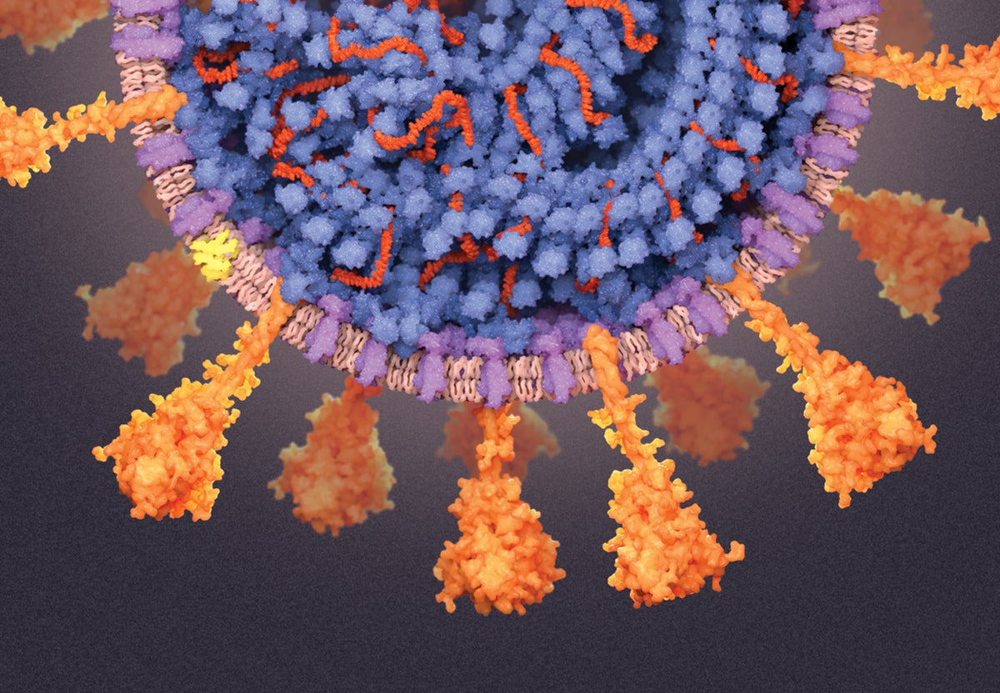

Illustration: Veronica Falconieri Hays, for "A Visual Guide to the SARS-CoV-2 Coronavirus," Scientific American.
The Problem With Looking for Everything
Every diagnostic test ever built starts with a question: what are you looking for? PCR tests want a specific gene target. Antigen tests want a specific protein. Even most sequencing-based diagnostics are designed around a shortlist of known suspects — a panel of the twelve respiratory viruses you expect to see this season, say. That works well until the pathogen on the other side of the exam room is one nobody put on the list.
That's the scenario public-health agencies call "Disease X" — the pathogen that doesn't have a name yet. Metagenomic sequencing is the only realistic way to catch it, because it doesn't ask "is this Pathogen A, B, or C?" It sequences everything in a sample indiscriminately and lets the bioinformatics sort out what's there afterward. In theory, that means a metagenomic assay could have flagged SARS-CoV-2 in a nasal swab in December 2019, months before anyone had a name for it, a genome to align to, or a primer set to run.
In practice, metagenomics has a signal-to-noise problem that borders on absurd. A nasopharyngeal swab is overwhelmingly human. Ribosomal RNA and a few dozen highly expressed housekeeping genes routinely eat up 80–90% of the reads in a total RNA-seq library. If a patient is genuinely infected, the pathogen's genetic material might make up a fraction of a percent of the sequencing output — and you've spent most of your sequencing budget confirming, again, that human ribosomes exist. At the depth most labs can afford, a low-titer or early-stage infection can simply disappear into the noise. This is the problem I spent a meaningful chunk of my time at Jumpcode Genomics trying to solve, and it's the reason a company known for cleaning up RNA-seq libraries for basic researchers ended up co-authoring a diagnostics paper and holding a BARDA contract.
The Scientific Approach
The core idea is not subtle, which is part of why it works: if the noise is a known, finite set of molecules, you can remove them before sequencing rather than filtering them out afterward. Jumpcode's CRISPRclean platform already did exactly this for basic RNA-seq — using Cas9 ribonucleoprotein complexes (RNPs) programmed with guide RNAs to cut and deplete unwanted transcripts from a library during prep, before a single read is generated. The insight that turned this into a diagnostics platform was recognizing that the "noise" in a metagenomic sample is the same category of molecule: overwhelmingly human rRNA and housekeeping transcripts. Deplete those, and the fraction of your sequencing budget spent on the pathogen goes up by an order of magnitude or more, without touching the pathogen sequence itself.
That last clause is the part that actually needed proving, and it's why this was a computational biology problem as much as a wet-lab one. You cannot design a depletion strategy against "human RNA" as a category and hope it doesn't collaterally damage the very sequences a metagenomic classifier needs to identify a novel virus. Any guide RNA library aimed at ribosomal and housekeeping transcripts has to be validated computationally against the reference genomes of the pathogens you're trying to detect — and, critically, against pathogens you haven't sequenced yet, since a truly agnostic assay has to generalize to genomes that don't exist in any database yet. We built and ran that specificity analysis before ever touching a nasal swab, and it's the reason the depletion strategy could credibly claim to be pathogen-agnostic rather than pathogen-specific with extra steps.
We tested the hypothesis directly on nasal samples from patients who had tested positive for SARS-CoV-2, comparing standard metatranscriptomic sequencing against the same libraries after CRISPR-RNP depletion of abundant human RNA. The result, published in 2023 in Cell Reports Methods, showed exactly what the arithmetic predicted: depletion increased both sensitivity and specificity for detecting the virus, because a larger share of every sequencing run was now doing useful work instead of re-confirming human ribosomal architecture.
"The virus was always in the sample. The problem was never detection sensitivity in the abstract — it was that we were burying the signal under our own biology and calling it noise."
Building the Computational Pipeline
Proving the concept on a benchtop Illumina run is one exercise. Making it work as a fieldable diagnostic workflow is a different, much larger one, and this is where most of my actual working hours went. A few of the harder problems, in the order we hit them:
- Designing at a scale nobody had attempted. A depletion panel comprehensive enough to meaningfully clear out human transcriptomic noise, robust enough to work across individual genetic variation, and specific enough to avoid off-target effects elsewhere in the genome required assembling a guide RNA library on the order of 1.2 million CRISPR-gRNAs — computationally designed, filtered for specificity, and then synthesized and deployed together in a single one-pot depletion reaction. To my knowledge, this remains the first time more than a million distinct Cas9-RNP complexes have been synthesized and used together in any biotechnological context, and getting there required rethinking gRNA design, off-target scoring, and synthesis logistics as a pipeline problem rather than a one-off experiment.
- Platform-agnostic read processing. As principal technical author on the BARDA proposal, I designed the bioinformatics workflow specifically around Oxford Nanopore (ONT MinION) sequencing — a deliberate choice, since nanopore's real-time, portable sequencing is what makes a "point-of-need" diagnostic plausible outside a reference lab. That meant building a pipeline tuned to nanopore's basecalling and error profile: adapter and quality trimming suited to long-read data, aggressive computational subtraction of host-derived reads (the depletion step reduces this burden substantially, but doesn't eliminate it at the bioinformatics layer), and taxonomic classification against curated pathogen reference sets, all built to run fast enough that results could plausibly inform a clinical decision the same day.
- Benchmarking sensitivity honestly. A diagnostic pipeline is only as credible as its limit-of-detection characterization. We built out titration experiments — dropping viral load in a background of real clinical nasal RNA down toward the assay's floor — and used depleted vs. non-depleted library pairs as internal controls, so every sensitivity claim in the published work was a direct, matched comparison rather than a comparison against a different study's numbers.
- Designing for a database that doesn't exist yet. Agnostic pathogen detection means your classifier will eventually see a read that doesn't match anything in RefSeq. The pipeline had to make a defensible decision in that situation — flag it as "unclassified but present at anomalous abundance" rather than silently discard it — because that flag is the entire point of the exercise. A system that only ever reports pathogens it already knew about isn't zero-day anything.
None of this is exotic algorithmically — there's no proprietary machine-learning model doing the classification, and I think that's a feature, not a limitation. In a regulated diagnostics context, a pipeline built from well-characterized, auditable steps (quality control, host subtraction, reference-based and unclassified-read triage) is a pipeline you can actually validate, document, and eventually get through a clinical-approval process. The genuinely hard engineering was upstream of the classifier: making sure the library going into the sequencer was clean enough that the classifier's job became tractable in the first place.
From Proof-of-Concept to a $24M Instrument
The BARDA contract ($750K) funded the work that got this from a laboratory demonstration to a workflow BARDA and its partners took seriously as an infectious-disease surveillance tool. That, in turn, is what caught the attention of HaDEA, the EU's Health and Digital Executive Agency, which in late 2024 backed a consortium program — reported at up to ~$24M — to build a fully automated, cloud-connected in-vitro diagnostic (IVD) instrument as Phase 1 of a European pandemic-preparedness initiative.
That instrument is a different order of engineering problem than a manual wet-lab protocol, because it has to perform RNA extraction, library preparation, CRISPR-based depletion, and library synthesis in one automated, closed system — and, critically, couple that automation to real-time base-calling retrieval from an Illumina MiSeq i100, so that the instrument's software can make sequencing-progress decisions (how much data is enough, when to stop, when to flag an anomaly) while the run is still happening rather than after the fact. Bioinformatics on this project stopped being a downstream analysis step and became a real-time control system embedded in hardware. We also secured CDC funding to begin the clinical-approval process in the US, running in parallel with the European regulatory track.
What This Means Going Forward
The satisfying part of this project, for me, is the shape of the arc: a technique built to solve a benchtop annoyance for RNA-seq researchers — too many reads wasted on ribosomal RNA — turned out to be exactly the missing piece for a much bigger problem in infectious-disease surveillance, once someone did the computational work to prove the depletion wouldn't compromise the very signal a diagnostic needs to preserve. It's also a reminder that "zero-day" detection isn't really a machine-learning problem or a database problem first. It's a signal-processing problem, and sometimes the most direct fix is upstream of the algorithm entirely — in what you let onto the flow cell in the first place.